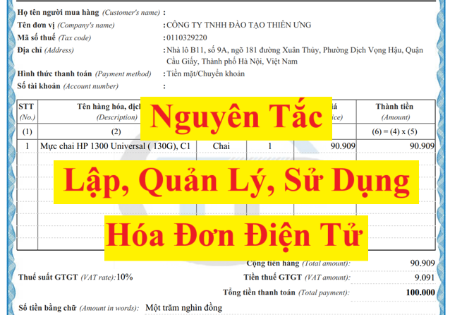

Nguyên tắc lập, quản lý, sử dụng hóa đơn điện tử mới nhất năm 2025 theo quy định tại Nghị định 70/2025/NĐ-CP sửa đổi Nghị định 123/2020/NĐ-CP có hiệu lực từ ngày 01/06/2025
Cụ thể về Nguyên tắc lập, quản lý, sử dụng hóa đơn điện tử như sau:
1. Khi bán hàng hóa, cung cấp dịch vụ, người bán phải lập hóa đơn để giao cho người mua (bao gồm cả các trường hợp hàng hóa, dịch vụ dùng để khuyến mại, quảng cáo, hàng mẫu; hàng hóa, dịch vụ dùng để cho, biếu, tặng, trao đổi, trả thay lương cho người lao động và tiêu dùng nội bộ (trừ hàng hóa luân chuyển nội bộ để tiếp tục quá trình sản xuất); xuất hàng hóa dưới các hình thức cho vay, cho mượn hoặc hoàn trả hàng hóa) và các trường hợp lập hóa đơn theo quy định tại Điều 19 Nghị định này. Hóa đơn phải ghi đầy đủ nội dung theo quy định tại Điều 10 Nghị định 123/2020/NĐ-CP. Trường hợp sử dụng hóa đơn điện tử phải theo định dạng chuẩn dữ liệu của cơ quan thuế theo quy định tại Điều 12 Nghị định 123/2020/NĐ-CP.
Chi tiết về Điều 10 Nghị định 123/2020/NĐ-CP (đã được bổ sung bởi Khoản 7 Điều 1 Nghị định 70/2025/NĐ-CP và hướng dẫn tại Điều 5 Thông tư 32/2025/TT-BTC) thì các bạn xem tại đây: Những nội dung bắt buộc trên hóa đơn điện tử
Chi tiết về Điều 12 Nghị định 123/2020/NĐ-CP (đã được sửa đổi bởi Khoản 9 Điều 1 Nghị định 70/2025/NĐ-CP) thì các bạn xem tại đây: Định dạng hóa đơn điện tử
Lưu ý: Nếu doanh nghiệp bán hàng hóa, cung cấp dịch vụ nhưng không lập hóa đơn để giao cho người mua thì sẽ bị xử phạt vi phạm hành chính theo quy định tại Điều 24 của Nghị định 125/2020/NĐ-CP quy định xử phạt vi phạm hành chính về thuế, hóa đơn.
Điều 24. Xử phạt hành vi vi phạm quy định về lập hóa đơn khi bán hàng hóa, dịch vụ
2. Phạt tiền từ 500.000 đồng đến 1.500.000 đồng đối với một trong các hành vi sau đây:
a) Không lập hóa đơn tổng hợp theo quy định của pháp luật về hóa đơn bán hàng hóa, cung ứng dịch vụ.
b) Không lập hóa đơn đối với các hàng hóa, dịch vụ dùng để khuyến mại, quảng cáo, hàng mẫu; hàng hóa, dịch vụ dùng để cho, biếu, tặng, trao đổi, trả thay lương cho người lao động, trừ hàng hóa luân chuyển nội bộ, tiêu dùng nội bộ để tiếp tục quá trình sản xuất.
5. Phạt tiền từ 10.000.000 đồng đến 20.000.000 đồng đối với hành vi không lập hóa đơn khi bán hàng hóa, cung cấp dịch vụ cho người mua theo quy định, trừ hành vi quy định tại điểm b khoản 2 Điều này.
6. Biện pháp khắc phục hậu quả: Buộc lập hóa đơn theo quy định đối với hành vi quy định tại điểm d khoản 4, khoản 5 Điều này khi người mua có yêu cầu.
Kế Toán Diệu Tâm mời các bạn tham khảo thêm:
2. Khi khấu trừ thuế thu nhập cá nhân, khi thu thuế, phí, lệ phí, tổ chức, cá nhân khấu trừ thuế, tổ chức thu thuế, phí, lệ phí phải lập chứng từ khấu trừ thuế, biên lai thu thuế, phí, lệ phí giao cho người có thu nhập bị khấu trừ thuế, người nộp thuế, nộp phí, lệ phí và phải ghi đầy đủ các nội dung theo quy định tại Điều 32 Nghị định này. Trường hợp sử dụng chứng từ điện tử thì phải theo định dạng chuẩn dữ liệu của cơ quan thuế. Trường hợp cá nhân ủy quyền quyết toán thuế thì không cấp chứng từ khấu trừ thuế thu nhập cá nhân.
3. Trước khi sử dụng hóa đơn, chứng từ, doanh nghiệp, tổ chức kinh tế, tổ chức khác, hộ kinh doanh, cá nhân kinh doanh, tổ chức, cá nhân khấu trừ thuế thu nhập cá nhân, tổ chức thu thuế, phí, lệ phí, phải thực hiện đăng ký sử dụng với cơ quan thuế hoặc thực hiện thông báo phát hành theo quy định tại Điều 15, Điều 34 và khoản 1 Điều 36 Nghị định này. Đối với hóa đơn, biên lai do cơ quan thuế đặt in, cơ quan thuế thực hiện thông báo phát hành theo khoản 3 Điều 24 và khoản 2 Điều 36 Nghị định này.
Kế Toán Diệu Tâm mời các bạn tham khảo: Đăng ký sử dụng hóa đơn điện tử (Có thủ tục và hồ sơ mẫu)
4. Tổ chức, hộ kinh doanh, cá nhân kinh doanh trong quá trình sử dụng phải báo cáo tình hình sử dụng hóa đơn mua của cơ quan thuế, báo cáo tình hình sử dụng biên lai đặt in, tự in hoặc biên lai mua của cơ quan thuế theo quy định tại Điều 29, Điều 38 Nghị định này.
5. Việc đăng ký, quản lý, sử dụng hóa đơn điện tử, chứng từ điện tử phải tuân thủ các quy định của pháp luật về giao dịch điện tử, kế toán, thuế, quản lý thuế và quy định tại Nghị định này.

6. Dữ liệu hóa đơn, chứng từ khi bán hàng hóa, cung cấp dịch vụ, dữ liệu chứng từ khi thực hiện các giao dịch nộp thuế, khấu trừ thuế và nộp các khoản thuế, phí, lệ phí là cơ sở dữ liệu để phục vụ công tác quản lý thuế và cung cấp thông tin hóa đơn, chứng từ cho các tổ chức, cá nhân có liên quan.
Người bán hàng hóa, cung cấp dịch vụ, tổ chức cung cấp dịch vụ hóa đơn điện tử, cơ quan thuế sử dụng cơ sở dữ liệu về hóa đơn điện tử để thực hiện các biện pháp khuyến khích người tiêu dùng lấy hóa đơn khi mua hàng hóa, dịch vụ như: Chương trình khách hàng thường xuyên, chương trình tham gia dự thưởng, chương trình hóa đơn may mắn. Đối với biện pháp khuyến khích người tiêu dùng là cá nhân lấy hóa đơn khi mua hàng hóa, dịch vụ phục vụ công tác tuyên truyền, nâng cao ý thức người tiêu dùng do cơ quan thuế thực hiện, Bộ Tài chính tổ chức thực hiện nội dung này từ nguồn ngân sách nhà nước được đảm bảo hàng năm để hiện đại hóa, nâng cao hiệu lực, hiệu quả công tác quản lý thuế theo quy định của pháp luật quản lý thuế.
7. Người bán hàng hóa, cung cấp dịch vụ được ủy nhiệm cho bên thứ ba lập hóa đơn điện tử cho hoạt động bán hàng hóa, cung cấp dịch vụ. Hóa đơn được ủy nhiệm cho bên thứ ba lập phải thể hiện tên đơn vị bán là bên ủy nhiệm. Việc ủy nhiệm phải được xác định bằng văn bản giữa bên ủy nhiệm và bên nhận ủy nhiệm thể hiện đầy đủ các thông tin về hóa đơn ủy nhiệm (mục đích ủy nhiệm; thời hạn ủy nhiệm; phương thức thanh toán hóa đơn ủy nhiệm) và phải thông báo cho cơ quan thuế khi đăng ký sử dụng hóa đơn điện tử. Trường hợp hóa đơn ủy nhiệm là hóa đơn điện tử không có mã của cơ quan thuế thì bên ủy nhiệm phải chuyển dữ liệu hóa đơn điện tử đến cơ quan thuế thông qua tổ chức cung cấp dịch vụ. Bộ trưởng Bộ Tài chính hướng dẫn cụ thể nội dung này.
7. Người bán hàng hóa, cung cấp dịch vụ được ủy nhiệm cho bên thứ ba lập hóa đơn điện tử cho hoạt động bán hàng hóa, cung cấp dịch vụ. Hóa đơn được ủy nhiệm cho bên thứ ba lập phải thể hiện tên đơn vị bán là bên ủy nhiệm. Việc ủy nhiệm phải được xác định bằng văn bản giữa bên ủy nhiệm và bên nhận ủy nhiệm thể hiện đầy đủ các thông tin về hóa đơn ủy nhiệm (mục đích ủy nhiệm; thời hạn ủy nhiệm; phương thức thanh toán hóa đơn ủy nhiệm) và phải thông báo cho cơ quan thuế khi đăng ký sử dụng hóa đơn điện tử. Trường hợp hóa đơn ủy nhiệm là hóa đơn điện tử không có mã của cơ quan thuế thì bên ủy nhiệm phải chuyển dữ liệu hóa đơn điện tử đến cơ quan thuế thông qua tổ chức cung cấp dịch vụ. Bộ trưởng Bộ Tài chính hướng dẫn cụ thể nội dung này.
Nội dung về Ủy nhiệm lập hóa đơn điện tử đang được Bộ Tài Chính hướng dẫn bởi Điều 4 Thông tư 32/2025/TT-BTC (Thay thế thông tư 78/2021/TT-BTC)
Chi tiết các bạn xem tại đây: Ủy nhiệm lập hóa đơn điện tử
Chi tiết các bạn xem tại đây: Ủy nhiệm lập hóa đơn điện tử
8. Tổ chức thu phí, lệ phí được ủy nhiệm cho bên thứ ba lập biên lai thu phí, lệ phí. Biên lai được ủy nhiệm cho bên thứ ba vẫn ghi tên của tổ chức thu phí, lệ phí là bên ủy nhiệm. Việc ủy nhiệm phải được xác định bằng văn bản giữa bên ủy nhiệm và bên nhận ủy nhiệm thể hiện đầy đủ các thông tin về biên lai ủy nhiệm (mục đích ủy nhiệm; thời hạn ủy nhiệm; phương thức thanh toán biên lai ủy nhiệm) và phải thông báo cho cơ quan thuế khi thông báo phát hành biên lai.
9. Trường hợp tổ chức thu thuế, phí, lệ phí và người cung cấp dịch vụ cùng thực hiện thu thuế, phí, lệ phí và tiền bán hàng hóa, cung cấp dịch vụ của một khách hàng thì được tích hợp biên lai thu thuế, phí, lệ phí và hóa đơn trên cùng một định dạng điện tử để giao cho người mua. Hóa đơn điện tử tích hợp phải đảm bảo có đủ nội dung của hóa đơn điện tử, biên lai điện tử và theo đúng định dạng do cơ quan thuế quy định. Người bán hàng hóa, cung cấp dịch vụ và tổ chức thu thuế, phí, lệ phí có trách nhiệm thỏa thuận về đơn vị chịu trách nhiệm lập hóa đơn điện tử tích hợp cho khách hàng và phải thông báo đến cơ quan thuế quản lý trực tiếp theo Mẫu số 01/ĐKTĐ-HĐĐT Phụ lục IA ban hành kèm theo Nghị định này. Việc kê khai doanh thu của người bán hàng hóa, cung cấp dịch vụ và việc kê khai thuế, phí, lệ phí thực hiện theo quy định của pháp luật quản lý thuế.
Ngoài ra, bạn cần tham khảo thêm quy định tại điều 6 của Thông tư 32/2025/TT-BTC (có hiệu lực từ ngày 01/06/2025, thay thế Thông tư 78/2021/TT-BTC)
Điều 6. Áp dụng hóa đơn điện tử đối với một số trường hợp khác
1. Các trường hợp bán hàng hóa, cung cấp dịch vụ khác với số lượng lớn, phát sinh thường xuyên, cần có thời gian đối soát số liệu giữa doanh nghiệp bán hàng hóa, cung cấp dịch vụ và khách hàng, đối tác được lập hóa đơn theo quy định tại điểm a khoản 4 Điều 9 Nghị định số 123/2020/NĐ-CP (được sửa đổi, bổ sung tại điểm b khoản 6 Điều 1 Nghị định số 70/2025/NĐ-CP) bao gồm: sản phẩm phái sinh theo quy định của pháp luật về các tổ chức tín dụng, pháp luật về chứng khoán và pháp luật về thương mại được quy định tại Luật Thuế giá trị gia tăng, dịch vụ cung cấp suất ăn công nghiệp, dịch vụ của sở giao dịch hàng hóa, dịch vụ thông tin tín dụng, dịch vụ kinh doanh vận tải hành khách bằng xe taxi (đối với khách hàng là các doanh nghiệp, tổ chức).
2. Tổ chức cho thuê tài chính cho thuê tài sản thuộc đối tượng chịu thuế giá trị gia tăng phải lập hóa đơn theo quy định
a) Tổ chức cho thuê tài chính cho thuê tài sản thuộc đối tượng chịu thuế giá trị gia tăng phải có hóa đơn giá trị gia tăng mua vào (đối với tài sản mua trong nước) hoặc chứng từ nộp thuế giá trị gia tăng ở khâu nhập khẩu (đối với tài sản nhập khẩu); khi lập hóa đơn, tổng số tiền thuế giá trị gia tăng trên hóa đơn giá trị gia tăng đầu ra phải khớp với số tiền thuế giá trị gia tăng trên hóa đơn giá trị gia tăng đầu vào của tài sản cho thuê tài chính (hoặc chứng từ nộp thuế giá trị gia tăng khâu nhập khẩu), thuế suất thể hiện ký hiệu “CTTC”. Các trường hợp tài sản mua để cho thuê thuộc đối tượng không chịu thuế giá trị gia tăng, hoặc không có hóa đơn giá trị gia tăng hoặc không có chứng từ nộp thuế giá trị gia tăng ở khâu nhập khẩu thì khi lập hóa đơn không được thể hiện thuế giá trị gia tăng trên hóa đơn.
b) Việc lập hóa đơn đối với hoạt động cho thuê tài chính như sau:
b.1) Trường hợp tổ chức cho thuê tài chính chuyển giao một lần toàn bộ số thuế giá trị gia tăng trên hóa đơn tài sản mua cho thuê tài chính cho bên đi thuê tài chính thì trên hóa đơn giá trị gia tăng thu tiền lần đầu của dịch vụ cho thuê tài chính, tổ chức cho thuê tài chính thể hiện rõ: thanh toán dịch vụ cho thuê tài chính và thuế giá trị gia tăng đầu vào của tài sản cho thuê tài chính hoặc thanh toán thuế giá trị gia tăng đầu vào của tài sản cho thuê tài chính, tiền hàng thể hiện giá trị dịch vụ cho thuê tài chính (không bao gồm thuế giá trị gia tăng của tài sản), thuế suất thể hiện ký hiệu “CTTC”, tiền thuế giá trị gia tăng thể hiện bằng tiền thuế giá trị gia tăng đầu vào của tài sản cho thuê tài chính.
b.2) Xử lý lập hóa đơn khi hợp đồng cho thuê tài chính chấm dứt trước thời hạn:
b.2.1) Thu hồi tài sản cho thuê tài chính: Trường hợp tổ chức cho thuê tài chính và bên đi thuê lựa chọn khấu trừ toàn bộ số thuế giá trị gia tăng của tài sản cho thuê, bên đi thuê điều chỉnh thuế giá trị gia tăng đã khấu trừ tính trên giá trị còn lại chưa có thuế giá trị gia tăng xác định theo biên bản thu hồi tài sản để chuyển giao cho tổ chức cho thuê tài chính. Trên hóa đơn giá trị gia tăng thể hiện rõ: số tiền thuế giá trị gia tăng xuất trả của tài sản thu hồi; thuế suất thể hiện ký hiệu “CTTC”; số thuế giá trị gia tăng tính trên giá trị còn lại chưa có thuế giá trị gia tăng xác định theo biên bản thu hồi tài sản.
b.2.2) Bán tài sản thu hồi: Tổ chức cho thuê tài chính khi bán tài sản thu hồi phải lập hóa đơn giá trị gia tăng theo quy định giao cho khách hàng.